Foot care

General Foot Care Tips:
1. Daily Washing: Use lukewarm water and mild soap. Dry thoroughly.
2. Moisturizing: Apply moisturizer after showering, avoiding spaces between toes.
3. Daily Inspection: Examine feet for blisters, cuts, or sores.
4. Toenail Care: Cut toenails straight across and maintain a reasonable length.
5. Socks and Footwear: Wear clean socks daily. Ensure shoes are properly fitted and comfortable.
6. Winter Care: Keep feet warm with thick cotton socks in winter.
7. Heel Height: Limit heel height to 2cm for stability.
8. Protection: Avoid walking barefoot inside and outside.
9. Shoe Check: Check inside shoes for foreign objects.
Additional Tips for Individuals with Diabetes:
1. Daily Foot Inspection: Check for skin color changes, cuts, blisters, hard skin, and fungal infections.
2. Signs of Infection: Be aware of signs like redness, warmth, swelling, pain, pus, smell, fever, or chills.
3. Moisturize and File: Moisturize daily, avoiding application between toes. File hard skin or corns; seek professional advice if needed.
4. Toenail Care: Cut toenails straight across and file edges.
5. Supportive Shoes: Wear shoes with supportive features and choose well-fitting socks.
6. Blood Sugar Control: Maintain good blood sugar levels.
7. Regular Check-ups: Go for a yearly Diabetic Foot Screening.
Understanding Diabetes-Related Foot Issues:
Diabetes can lead to neuropathy (nerve damage) in the feet, causing sensations like tingling, pain, or weakness. Reduced blood flow to the feet is common in diabetes, making it difficult for injuries to heal and increasing the risk of infections. Changes in foot shape or toes can contribute to further complications.
Regular Communication with Healthcare Professionals:
Regular communication with your diabetes care team is crucial for comprehensive management. Be proactive in reporting any changes or issues in your feet promptly. Your healthcare professionals can provide tailored advice, monitor your foot health, and intervene early if needed.
Maintain Blood Sugar Levels:
Keeping your blood sugar levels within a target range is crucial for overall health, including the well-being of your feet. Consistent blood sugar control helps prevent or minimize complications related to diabetes, including those affecting your feet. Follow your healthcare team's recommendations for medication, diet, and lifestyle adjustments to manage your blood sugar effectively.
Regular Professional Check-up:
In addition to your daily routine, it's essential to go for a yearly Diabetic Foot Screening at a polyclinic, GP clinic, or hospital. These screenings are proactive measures to assess your foot health, identify potential issues early on, and receive professional guidance on managing diabetes-related foot concerns.
Daily Foot Care Routine:
1. Wash with Caution: Use warm water; avoid soaking.
2. Thorough Drying: Dry feet completely, especially between toes.
3. Moisturize Carefully: Keep the skin soft without applying between toes.
4. Daily Inspection: Check for cuts, sores, blisters, redness, calluses, or any other abnormalities.
5. Immediate Reporting: Report any changes promptly to your diabetes care team.
Summary:
By incorporating these foot care practices into your daily routine, you can maintain healthy feet and reduce the risk of complications, especially if you have diabetes. Remember to stay vigilant, conduct regular self-checks, and report any changes or issues to your healthcare team promptly.
It's crucial to understand the specific challenges that diabetes can pose to foot health and take proactive steps to address them. With proper care, you can enhance your overall well-being and minimize the impact of diabetes-related foot issues.
Always consult with your healthcare professionals for personalized advice and guidance on managing diabetes and maintaining optimal foot health.
Conclusion:
Taking care of your feet is an essential part of maintaining overall health, particularly for individuals with diabetes. The daily foot care routine, coupled with regular check-ups and a proactive approach, can significantly reduce the likelihood of complications. Remember, your feet are valuable indicators of your overall well-being, and by following these guidelines, you are actively contributing to your long-term health.
If you have any concerns or notice changes in your feet, don't hesitate to reach out to your healthcare team. Your proactive engagement in foot care, coupled with professional guidance, is key to managing diabetes-related foot issues effectively.
Images
 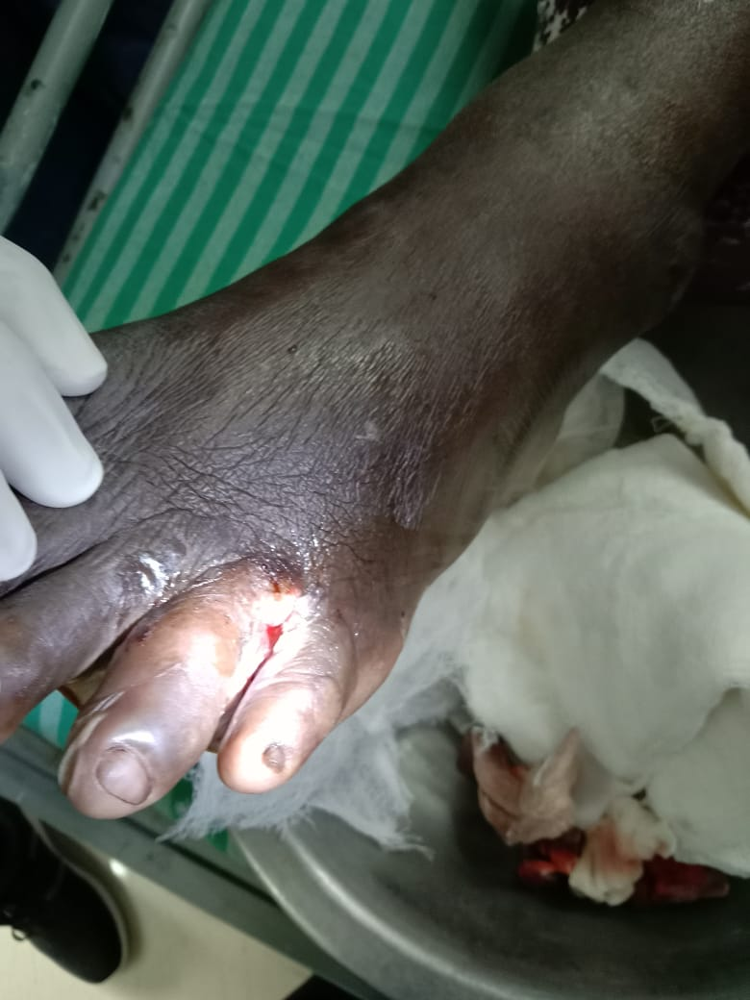
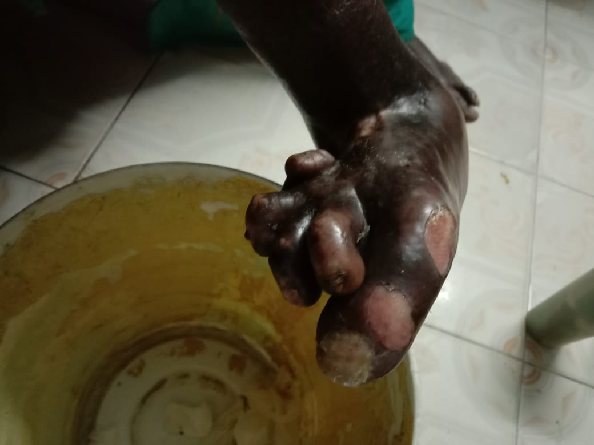
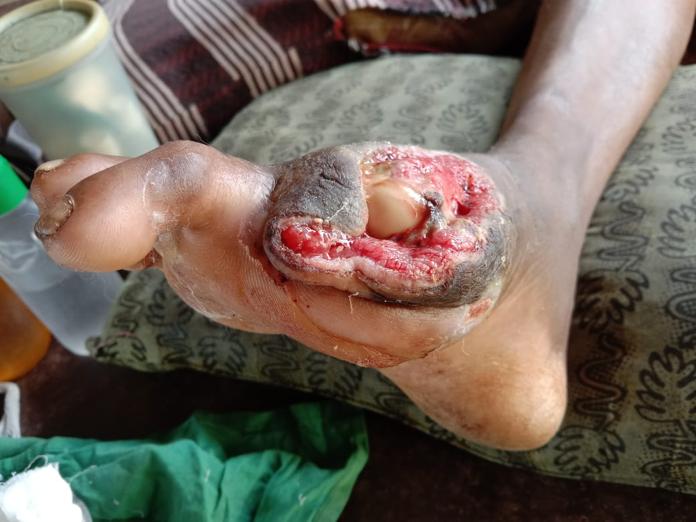
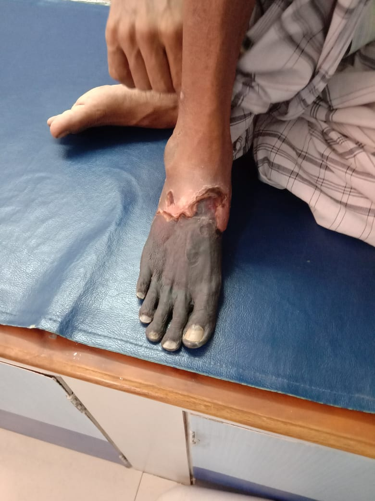
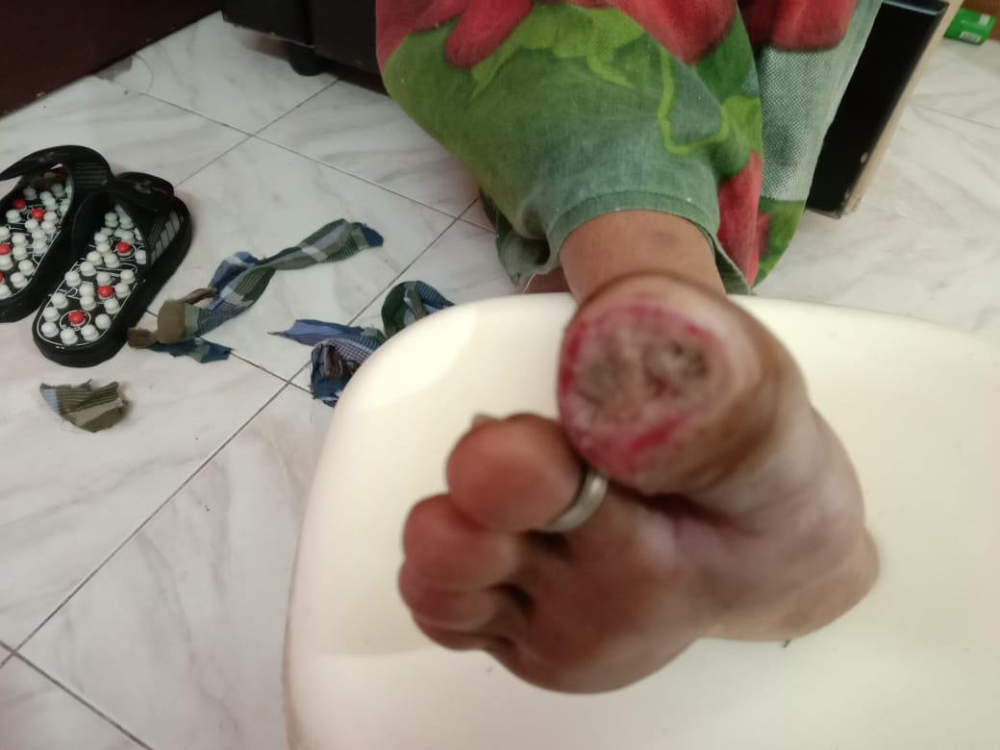
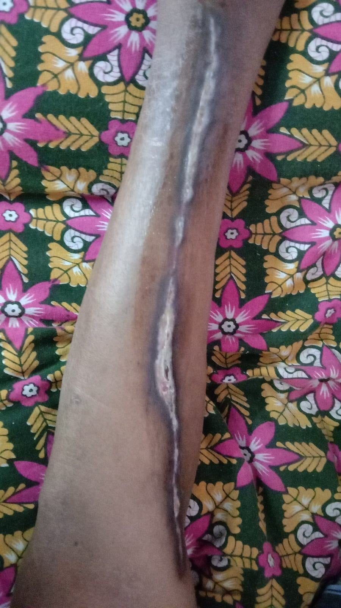
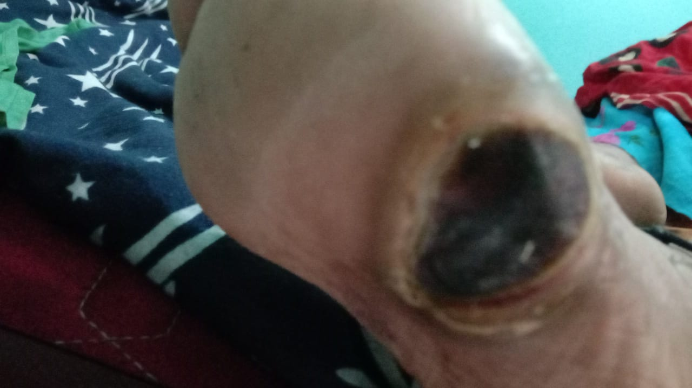
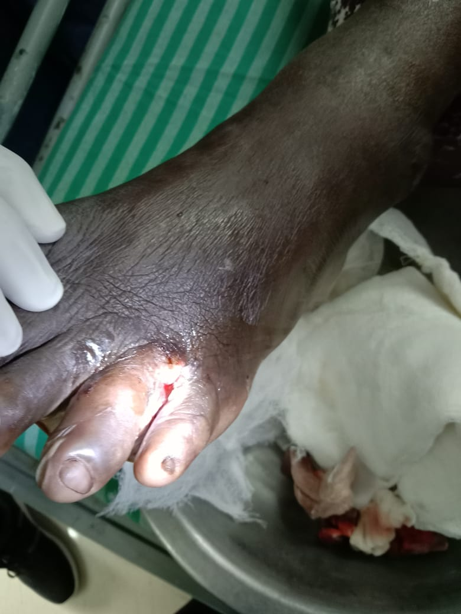
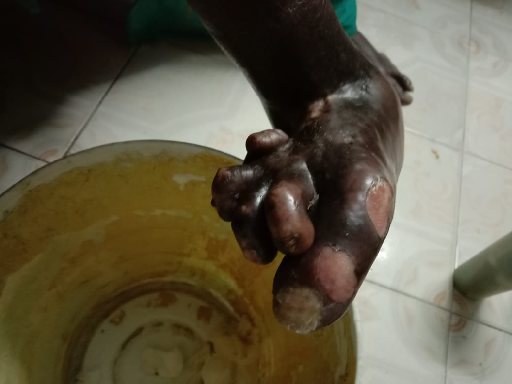
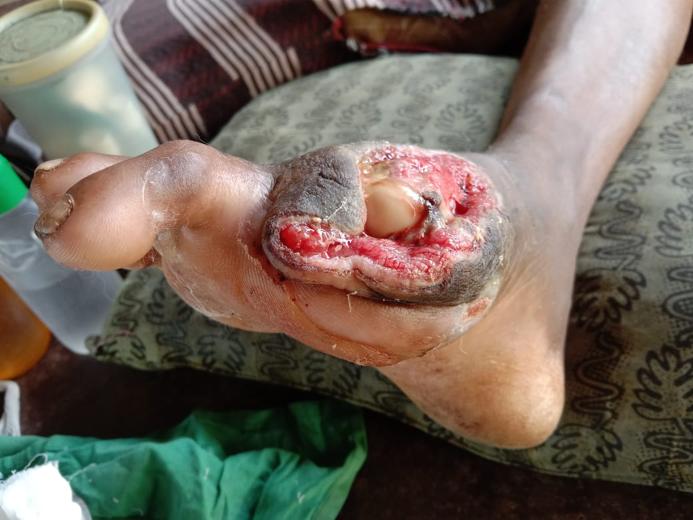
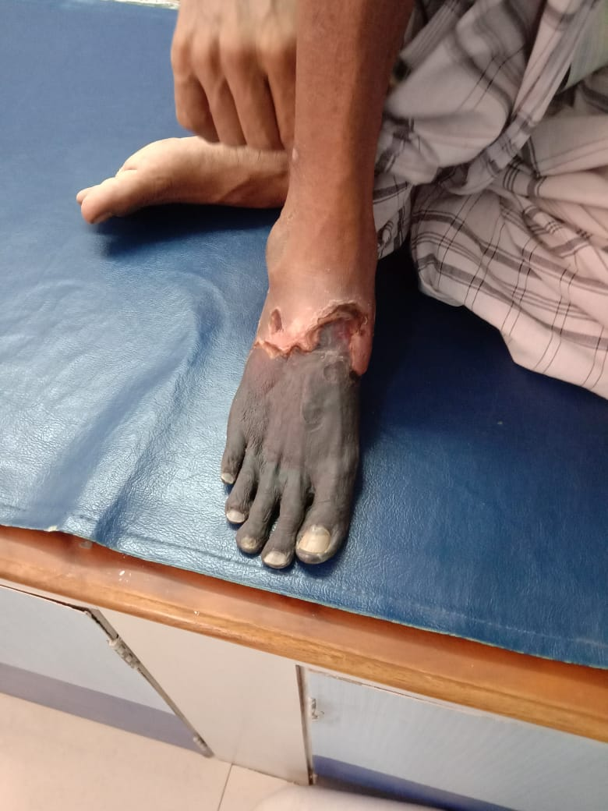
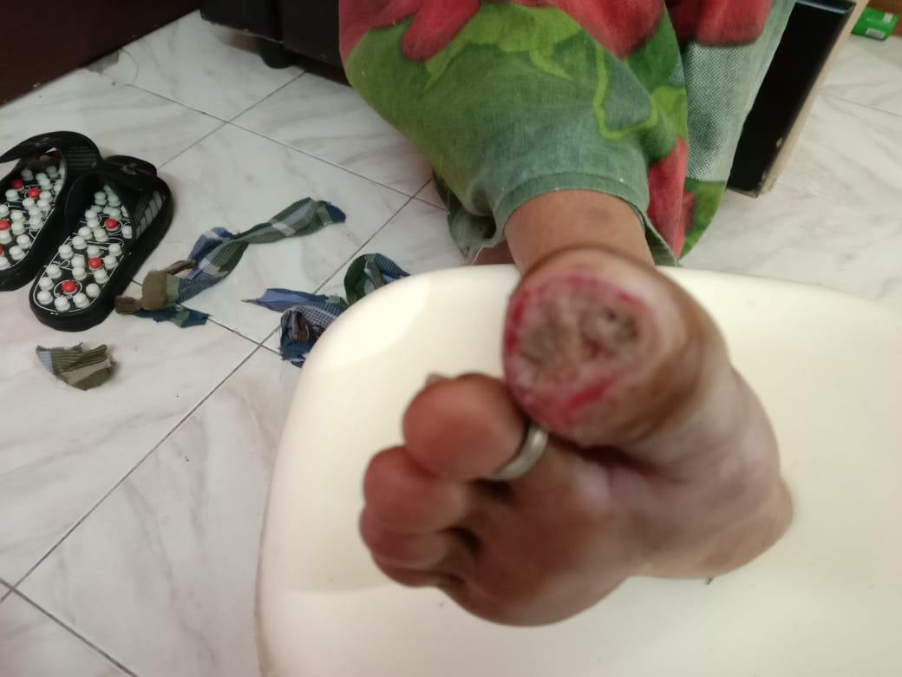
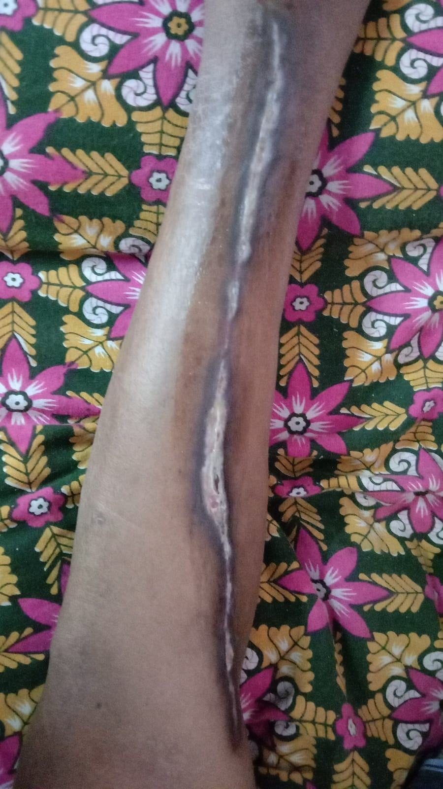
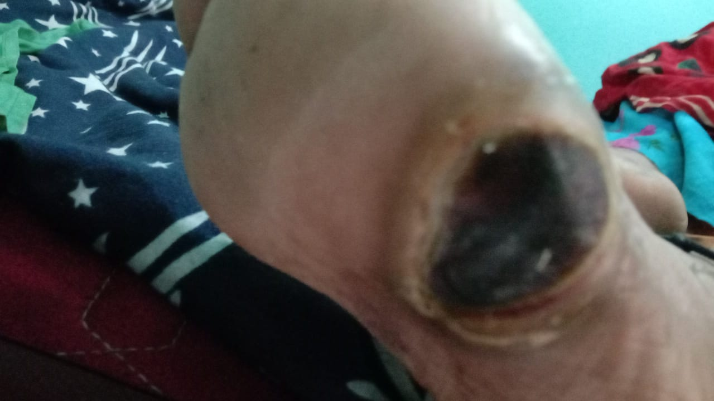